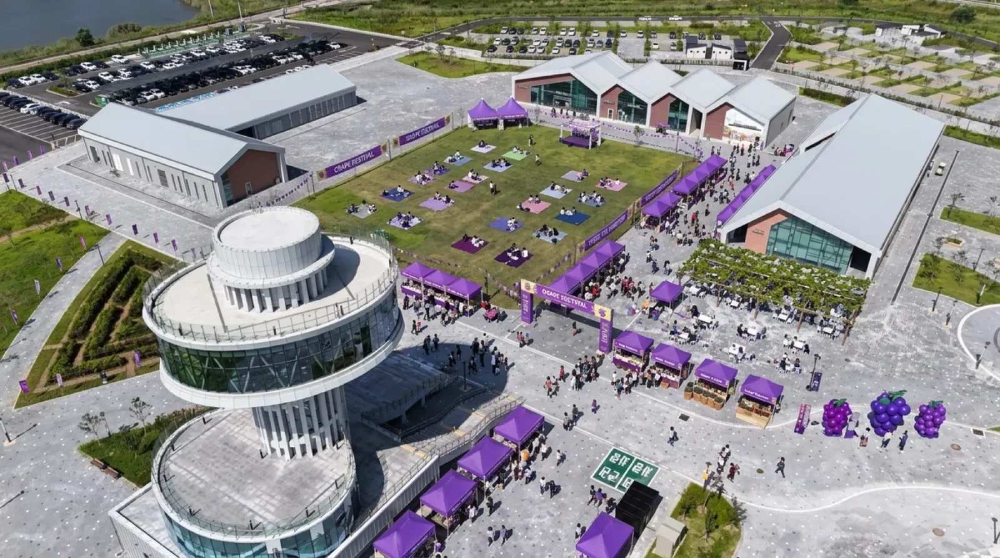
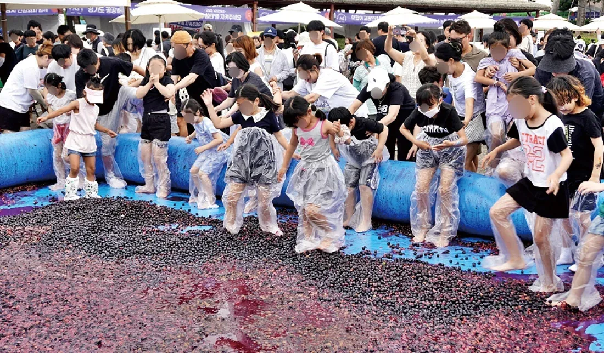
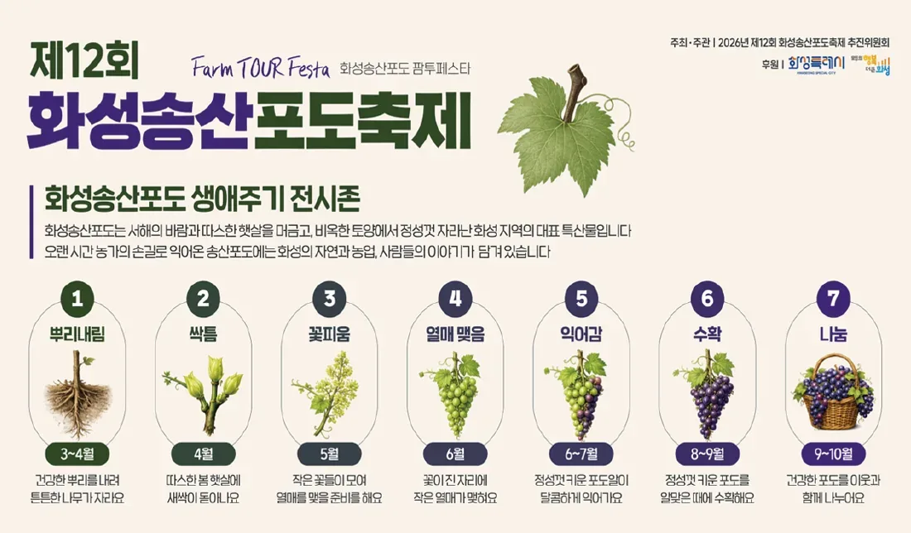
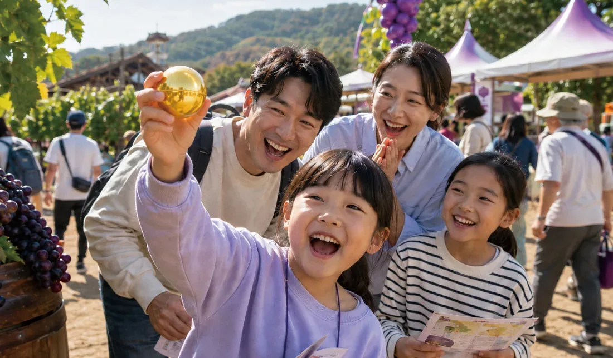
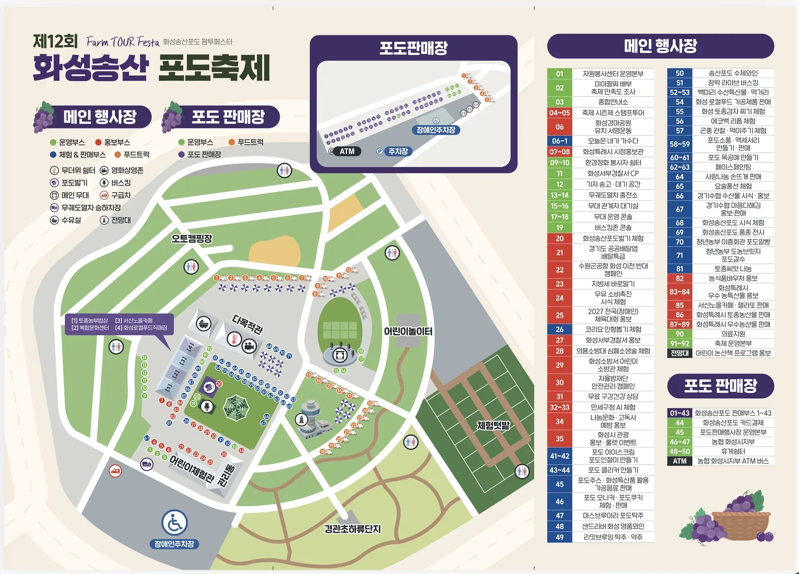
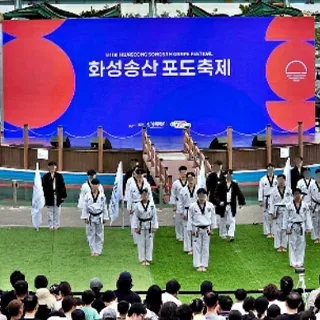
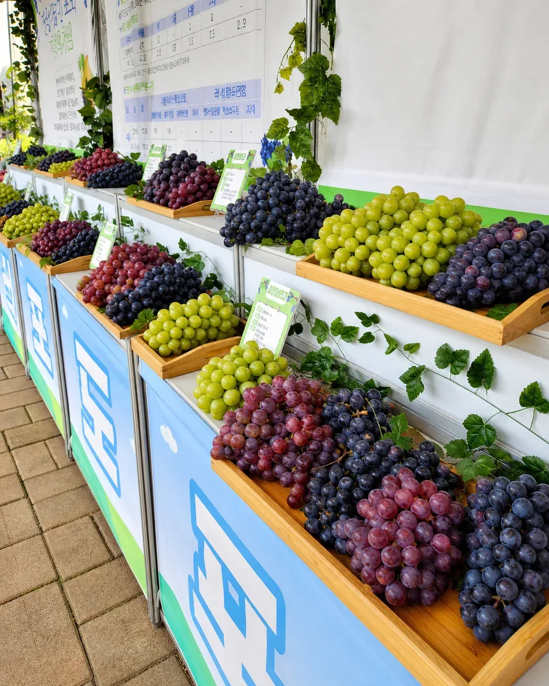
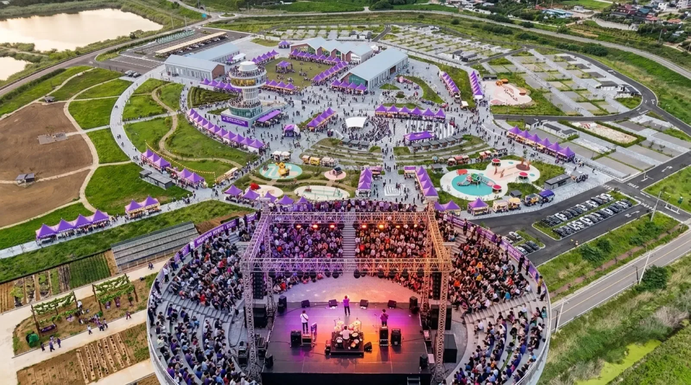

▲ 화성에코팜테마파크 전경. 전망대 타워를 중심으로 잔디광장과 부스가 원형으로 배치돼 있다 ⓒ 화성송산포도축제 공식
제12회를 맞은 화성송산포도축제가 2026년 9월 5일부터 6일까지 화성에코팜테마파크 일원에서 열렸다. 그런데 현지 취재 기사의 제목은 포도가 아니라 "주차 전쟁"이었다. 12회째 이어온 축제인데도 여전히 반복되는 숙제가 있다는 뜻이다. 올해 주제는 '화성송산포도 Farm Tour Festa'로, 포도밭 투어를 콘셉트로 체험·공연·먹거리 프로그램을 대폭 늘렸다.
1. 왜 12년째 주차가 문제인가
화성송산포도축제는 지역 특산물인 포도를 테마로 한 가을철 대표 축제로 자리 잡았지만, 현지 언론은 "포도보다 먼저 만난 주차 전쟁"이라는 표현으로 매년 반복되는 주차 혼잡을 지적해왔다. 축제 규모가 해마다 커지는 데 비해 행사장 인근의 주차 용량이 이를 완전히 따라가지 못하고 있다는 뜻으로 해석된다.
2. 포도밟기부터 수확 체험까지

▲ 포도밟기 체험. 아이들이 보라색으로 물든 포도즙 속에서 신나게 발을 구르고 있다 ⓒ 화성송산포도축제 공식
대표 프로그램인 '포도밟기'는 지난해까지 궁평항에서 열렸으나, 올해는 화성에코팜테마파크 중앙 잔디광장으로 자리를 옮겨 가족 단위 참여형으로 운영됐다. 방수 비닐 덧신을 신고 대형 풀장에 담긴 포도를 맨발로 밟아보는 체험으로, 축제 기간 내내 아이들에게 가장 인기 있는 부스로 꼽힌다. 여기에 지역에서 생산된 포도를 직접 만나볼 수 있는 시식·판매 부스, 공연 프로그램, 다양한 먹거리 판매 부스가 함께 어우러져 있다.
3. 포도가 자라기까지 — 생애주기 전시관

▲ '화성송산포도 생애주기 전시존' 안내판. 뿌리내림(3~4월)부터 나눔(9~10월)까지 7단계로 포도의 한 해를 소개한다 ⓒ 화성송산포도축제 공식
올해 새로 마련된 '포도 생애주기 전시관'은 체험형 전시 공간으로, 관람객은 포도의 생육 과정과 다양한 품종을 한눈에 살펴볼 수 있다. 뿌리내림(3~4월)→싹틈(4월)→꽃피움(5월)→열매맺음(6월)→익어감(6~7월)→수확(8~9월)→나눔(9~10월)까지, 화성송산포도가 서해의 바람과 따스한 햇살을 머금고 자라나는 과정을 7단계로 나눠 보여준다. 단순한 먹거리 축제를 넘어 지역 농업의 스토리를 전달하려는 시도로 읽힌다.
4. 황금 포도알 찾기 등 가족 체험

▲ '황금 포도알 찾기' 체험에 참여한 가족. 축제장 곳곳에 숨겨진 황금 포도알을 찾는 프로그램이 아이들에게 인기를 끌었다 ⓒ 화성송산포도축제 공식
포도 소품·액세서리 만들기, 포도 목공예 만들기, 페이스페인팅, 요술풍선 체험 등 어린이 대상 부스도 다수 운영됐다. 낮 프로그램이 끝나면 전망대 타워 라운지에서 궁평항 방향 노을을 배경으로 현악 4중주 공연이 이어지고, 지역 와이너리가 생산한 와인을 곁들일 수 있는 자리도 마련됐다.
5. 주차장 배치도 — 미리 확인하고 가자

▲ 제12회 화성송산포도축제 공식 배치도. 메인 행사장 서남쪽 모서리에 장애인주차장이, 포도 판매장 옆에 ATM과 주차장이 표시돼 있다 ⓒ 화성송산포도축제 공식
주최 측은 행사장 배치도를 통해 일반주차장과 장애인주차장 위치를 안내하고 있다. 배치도에는 오토캠핑장, 다목적관, 어린이놀이터, 체험텃밭 등 시설 위치와 함께 무궤도열차 승하차장, 버스킹존, 메인무대 위치까지 표기돼 있어 도착 전 미리 살펴두면 동선을 짜기 수월하다. 다만 주차요금과 운영시간은 현장 사정에 따라 달라질 수 있다고 명시돼 있어, 방문 직전 공식 홈페이지나 안내 채널에서 최신 정보를 재확인하는 것이 안전하다.
화성송산포도축제 공식 홈페이지6. 공연 프로그램 — 태권도 시범부터 버스킹까지

▲ 메인 무대 오프닝 공연. 태권도 시범단이 축제 개막을 알리는 무대를 선보였다 ⓒ 화성송산포도축제 공식
메인 무대에서는 태권도 시범, 버스킹 공연, 지역 예술단체 공연이 이틀에 걸쳐 이어졌다. 무대 인근에는 관계자 대기실과 음향 콘솔이 별도로 마련돼 있으며, 관람객은 잔디광장에 자유롭게 자리를 펴고 공연을 즐길 수 있다.
7. 포도 판매장 & 로컬푸드 직매장

▲ 포도 판매장에 진열된 화성송산포도. 청포도부터 적포도, 흑포도까지 다양한 품종을 한자리에서 비교하며 살 수 있다 ⓒ 화성송산포도축제 공식
메인 행사장과 별도로 조성된 포도 판매장에서는 화성송산포도 판매부스 40여 곳이 운영되며, 포도 전용 카드결제 시스템과 농협 화성시지부 ATM 버스도 배치돼 현금 없이도 구매할 수 있다. 인근 화성로컬푸드 직매장, 서신노을카페, 복합문화센터도 함께 둘러볼 만하다.
8. 주차 전쟁을 피하는 법

▲ 야간 공연이 열리는 메인 무대(가운데)와 우측의 주차 구역. 행사장 규모에 비해 주차 공간이 상대적으로 협소하다는 점이 매년 지적된다 ⓒ 화성송산포도축제 공식
방문 팁
- 과거 사례상 오전 이른 시간 도착이 주차 확보에 유리하다.
- 대중교통이나 카풀 등 대안 이동수단도 함께 고려해보자.
- 공식 배치도에서 장애인주차장·ATM 위치를 미리 확인해두자.
- 방문 직전 공식 홈페이지에서 최신 주차 안내를 확인하자.
9. 정리
체크포인트
- 2026년 송산포도축제는 9월 5~6일 화성에코팜테마파크에서 열렸다.
- 포도밟기 체험은 올해부터 중앙 잔디광장에서 열린다.
- 포도 생애주기 전시관, 황금 포도알 찾기 등 신규 체험 프로그램이 늘었다.
- 12회째에도 주차 혼잡이 반복되는 것으로 알려져 있다.
- 방문 전 공식 홈페이지에서 주차·배치도 정보를 재확인하는 것이 필수다.